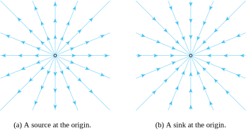
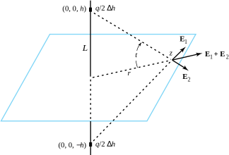
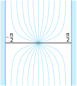
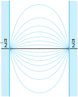
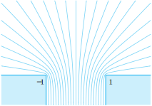

If the two-dimensional motion of an ideal fluid consists of an outward radial flow from a point and is symmetrical in all directions, then the point is called a simple source. A source at the origin can be considered as a line perpendicular to the \(z\) plane along which fluid is being emitted. If the rate of emission of volume of fluid per unit length is 2\(\pi m\text{,}\) then the origin is said to be a source of strength \(m\text{,}\) the complex potential for the flow is
For fluid flows, a sink is a negative source and is a point of inward radial flow at which the fluid is considered to be absorbed or annihilated. Figure 10.11.1 illustrates these concepts.

Figure10.11.1.Sources and sinks for an ideal fluid
Subsection10.11.1Source: A Charged Line
In the case of electrostatics, a source will correspond to a uniformly charged line perpendicular to the \(z\) plane at the point \(z_0\text{.}\) We will show that if the line \(L\) is located at \(z_0=0\) and carries a charge density of \(\frac{q}{2}\) coulombs per unit length, then the magnitude of the electrical field is \(|\mathbf{E}(x,y)| = \frac{q}{\sqrt{x^2+y^2}}\text{.}\) Hence, \(\mathbf{E}\) is given by
A sink for electrostatics is a negatively charged line perpendicular to the \(z\) plane. The electric field for electrostatic problems corresponds to the velocity field for fluid flow problems, except that their corresponding potentials differ by a sign change.
To establish Equation (10.11.1), we start with Coulomb’s law, which states that two particles with charges \(q\) and \(Q\) exert a force on one another with magnitude \(\frac{CqQ}{r^2}\text{,}\) where \(r\) is the distance between particles and \(C\) is a constant that depends on the scientific units. For simplicity, we assume that \(C=1\) and the test particle at the point \(z\) has charge \(Q=1\text{.}\)
The contribution \(\Delta \mathbf{E}_1\) induced by the element of charge \(\frac{q\Delta h}{2}\) along the segment of length \(\Delta h\) situated at a height \(h\) above the plane has magnitude \(|\Delta \mathbf{E} _1|\) given by
It has the same magnitude as \(\Delta \mathbf{E}_2\) induced by the element \(\frac{q\Delta h}{2}\) located a distance \(-h\) below the plane. From the vertical symmetry involved their sum, \(\Delta \mathbf{E}_2+\Delta \mathbf{E}_2\text{,}\) lies parallel to the plane along the ray from the origin, as shown in Figure 10.11.2.

Figure10.11.2.Contributions to \(\mathbf{E}\) from the elements of charge \(\frac{q\Delta h}{2}\) situated at \((0,0,\pm h)\text{,}\) above and below the \(z\)-plane.
By the principal of superposition, we add all contributions from the elements of charge along \(L\) to obtain \(\mathbf{E}=\sum\Delta \mathbf{E}_k\text{.}\) By vertical symmetry, \(\mathbf{E}\) lies parallel to the complex plane along the ray from the origin through the point \(z\text{.}\) Hence the magnitude of \(\mathbf{E}\) is the sum of all components \(|\Delta \mathbf{E}|\cos t\) that are parallel to the complex plane, where \(t\) is the angle between \(\Delta \mathbf{E}\) and the plane. Letting \(\Delta h\to 0\) in this summation process produces the definite integral
Next, we use the change of variable \(h=r\tan t\) and \(dh=r\sec^2t\,dt\) and the trigonometric identity \(\sec ^2t=\frac{r^2+h^2}{r^2}\) to obtain the equivalent integral:
Multiplying this magnitude \(\frac{q}{r}\) by the unit vector \(\frac{z}{|z|}\) establishes Formula (10.11.1). If \(q>0\text{,}\) then the field is directed away from \(z_0=0\) and, if \(q\lt 0\text{,}\) then it is directed toward \(z_0=0\text{.}\) An electrical field located at \(z_0 \ne 0\) is given by
Let a source and sink of unit strength be located at the points \(+1\) and \(-1\text{,}\) respectively. The complex potential for a fluid flowing from the source at \(+1\) to the sink at \(-1\) is
which is the equation of a circle with center at \((0, \cot c)\) that passes through the points \((\pm 1, 0)\text{.}\) Several streamlines are indicated in Figure 10.11.4(a).
then the streamlines must satisfy the equation \(x^*y^*=\frac{\sin c}{2}\) and are rectangular hyperbolas with centers at the origin that pass through the points \(\pm 1\text{.}\)Figure 10.11.4(b) depicts several streamlines.
Let an ideal fluid flow in a domain in the \(z\) plane be effected by a source located at the point \(z_0\text{.}\) Then the flow at points \(z\text{,}\) which lie in a small neighborhood of the point \(z_0\text{,}\) is approximated by that of a source with the complex potential
Because \(S\,'(z_0) \ne 0\text{,}\) the term \(\mathrm{Log}[S\,'(z_0) + \eta(z)]\) approaches the constant value \(\mathrm{Log}[S\,'(z_0)]\) as \(z \to z_0\text{.}\) Also, because \(\log (z-z_0)\) is the complex potential for a source located at the point \(z_0\text{,}\) the image of a source under a conformal mapping is a source.
We can use the technique of conformal mapping to determine the fluid flow in a domain \(D\) in the \(z\) plane that is produced by sources and sinks. If we can construct a conformal mapping \(w=S(z)\) so that the image of sources, sinks, and boundary curves for the flow in \(D\) are mapped onto sources, sinks, and boundary curves in a domain \(G\) where the complex potential is known to be \(F_1(w)\text{,}\) then the complex potential in \(D\) is given by \(F_2(z) = F_1\big(S(z)\big)\text{.}\)
Example10.11.6.
Suppose that the lines \(x=\pm\frac{\pi}{2}\) are considered as walls of a containing vessel for a fluid flow produced by a single source of unit strength located at the origin. The conformal mapping \(w=S(z) =\sin z\) maps the infinite strip bounded by the lines \(x=\pm\frac{\pi}{2}\) onto the \(w\) plane slit along the boundary rays \(u\le -1, \, v=0\) and \(u \ge 1, \; v=0\text{,}\) and the image of the source at \(z_0=0\) is a source located at \(w_0=0\text{.}\) The complex potential
\begin{equation*}
F_1(w) =\log w
\end{equation*}
determines a fluid flow in the \(w\) plane past the boundary curves \(u \le -1, \, v=0\) and \(u \ge 1, \; v=0\text{,}\) which lie along streamlines of the flow. Therefore the complex potential for the fluid flow in the infinite strip in the \(z\) plane is
Several streamlines for the flow are illustrated in Figure 10.11.7.

Figure10.11.7.A source in the center of a strip
Example10.11.8.
Suppose that the lines \(x=\pm\frac{\pi}{2}\) are considered as walls of a containing vessel for the fluid flow produced by a single source of unit strength located at the point \(z_1=\frac{\pi}{2}\) and a sink of unit strength located at the point \(z_2=-\frac{\pi}{2}\text{.}\) The conformal mapping \(w=S(z)=\sin z\) maps the infinite strip bounded by the lines \(x=\pm\frac{\pi}{2}\) onto the \(w\) plane slit along the boundary rays \(K_1:u \le -1, \; v=0\) and \(K_2:u \ge 1, \; v=0\text{.}\) The image of the source at \(z_1\) is a source at \(w_1=1\text{,}\) and the image of the sink at \(z_2\) is a sink at \(w_2=-1\text{.}\) The potential
determines a fluid flow in the \(w\) plane past the boundary curves \(K_1\) and \(K_2\text{,}\) which lie along streamlines of the flow. Therefore the complex potential for the fluid flow in the infinite strip in the \(z\) plane is
Several streamlines for the flow are illustrated in Figure 10.11.9.

Figure10.11.9.A source and a sink on the edges of a strip
We can use the technique of transformation of a source to determine the effluence from a channel extending from infinity. In this case, we construct a conformal mapping \(w=S(z)\) from the upper half-plane \(\mathrm{Im}(z)>0\) so that the single source located at \(z_0=0\) is mapped to the point \(w_0\) at infinity that lies along the channel. The streamlines emanating from \(z_0=0\) in the upper half-plane are mapped onto streamlines issuing from the channel.
which maps the upper half-plane \(\mathrm{Im}(z)>0\) onto the domain consisting of the upper half-plane \(\mathrm{Im}(w)>0\) joined to the channel \(-1 \le u\le 1, \, v\le 0\text{.}\) The point \(z_0=0\) is mapped onto the point \(w_0=-i\infty\) along the channel. Images of the rays \(r>0\text{,}\)\(\theta =\alpha\) are streamlines issuing from the channel as indicated in Figure 10.11.11.

Figure10.11.11.Effluence from a channel into a half-plane
ExercisesExercises
1.
Let the coordinate axes be walls of a containing vessel for a fluid flow in the first quadrant that is produced by a source of unit strength located at \(z_1=1\) and a sink of unit strength located at \(z_2=i\text{.}\) Show that \(F(z) =\log\left(\frac{z^2-1}{z^2+1}\right)\) is the complex potential for the flow shown in Figure 10.11.12.
Solution.
\(F_{1}(w)=\log(\frac{w-1}{w+1})\) is the complex potential for a source at \(w_1=1\) and sink at \(w_2=-1\text{.}\) The function \(w=S(z)=z^2\) maps \(z_1=1\) and \(z_2=i\) onto \(w_1\) and \(w_2\text{,}\) respectively. Therefore, the composition \(F_2(z) = F_1\big(S(z)\big) = F_1(z^2) = \log(\frac{z^2-1}{z^2+1})\) is the desired complex potential.
2.
Let the coordinate axes be walls of a containing vessel for a fluid flow in the first quadrant that is produced by two sources of equal strength located at the points \(z_1=1\) and \(z_2=i\text{.}\) Find the complex potential \(F(z)\) for the flow in Figure 10.11.13
Let the lines \(x=0\) and \(x=\frac{\pi}{2}\) form the walls of a containing vessel for a fluid flow in the infinite strip \(0 \lt x \lt \frac{\pi}{2}\) that is produced by a single source located at the point \(z_0=0\text{.}\) Find the complex potential for the flow in Figure 10.11.14.
Solution.
\(F(z) =\log(\sin z)\text{.}\)
4.
Let the rays \(x=0, \, y>0\) and \(x=\pi \, y>0\) and the segment \(y=0, \, 0\lt x\lt \pi\) form the walls of a containing vessel for a fluid flow in the semi-infinite strip \(0\lt x\lt \pi\text{,}\)\(y>0\) that is produced by two sources of equal strength located at the points \(z_1=0\) and \(z_2=\pi\text{.}\) Find the complex potential for the flow shown in Figure 10.11.15
\hint{Use the fact that \(\sin(\frac{\pi}{2}+z) = \sin(\frac{\pi}{2 }-z)\text{.}\)}
Let the \(y\) axis be considered a wall of a containing vessel for a fluid flow in the right half plane \(\mathrm{Re}(z)>0\) that is produced by a single source located at the point \(z_0=1\text{.}\) Find the complex potential for the flow shown in Figure 10.11.16.
Solution.
\(F(z) =\log(z^2-1)\text{.}\)
6.
The complex potential \(F(z) =\frac{1}{z}\) determines an electrostatic field that is referred to as a dipole.
(a)
Show that \(F(z) =\lim\limits_{a\to 0}\frac{\log (z)-\log (z-a)}{a}\text{,}\) and that a dipole is the limiting case of a source and sink.
(b)
Show that the lines of flux of a dipole are circles that pass through the origin, as shown in Figure 10.11.17.
Use a Schwarz-Christoffel transformation to find a conformal mapping \(w=S(z)\) that will map the flow in the upper half-plane onto the flow from a channel into a quadrant, as indicated in Figure 10.11.18.
Use a Schwarz-Christoffel transformation to find a conformal mapping \(w=S(z)\) that will map the flow in the upper half-plane onto the flow from a channel into a sector, as indicated in Figure 10.11.19.
Use a Schwarz-Christoffel transformation to find a conformal mapping \(w=S(z)\) that will map the flow in the upper half-plane onto the flow in a right-angled channel indicated in Figure 10.11.20.
Use a Schwarz-Christoffel transformation to find a conformal mapping \(w=S(z)\) that will map the flow in the upper half-plane onto the flow from a channel back into a quadrant, as indicated in Figure 10.11.21, where \(w_0 = 2\sqrt{2} - 2\ln(\sqrt{2}-1) + i\pi\text{.}\)
\begin{exercise} Consider the complex potential \(F(z)=w\) given implicitly by \(z=w+e^w\text{.}\)
(a)
Show that \(F(z)=w\) determines the ideal fluid flow through an open channel bounded by the rays \(y=\pi, \, -\infty \lt x \lt -1, \text{ and } y = -\pi, \, -\infty \lt x \lt -1\) into the plane.
(b)
Show that the streamline \(\psi(x,y) =c\) of the flow is given by the parametric equations
\begin{equation*}
x = t + e,'\cos c, \text{ and } y = c+e,'\sin c, \text{ for } -\infty \lt t \lt \infty\text{,}
\end{equation*}